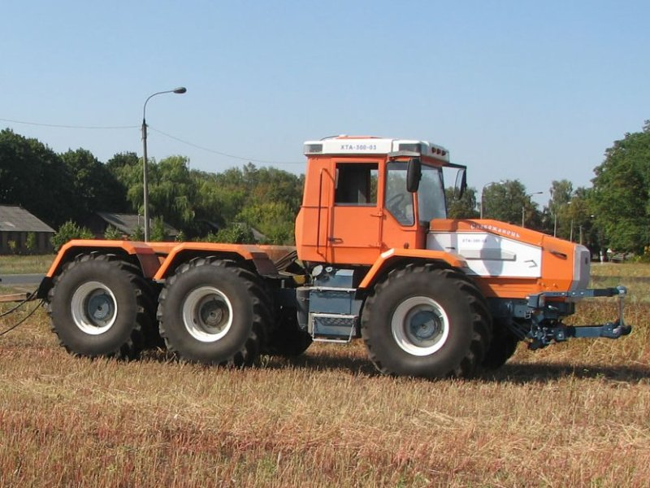

ХТА-300-03

ХТА-300-03 – це найпотужніший представник сімейства тракторів «Слобожанець», який належить до 5-го тягового класу. Завдяки високому крутному моменту та шарнірно-зчленованій рамі, цей трактор призначений для виконання найважчих польових робіт: глибокого розпушування, оранки багатокорпусними плугами та роботи з широкими посівними комплексами.
Конструкція моделі 300-03 відрізняється посиленими ведучими мостами (3 мости) та модернізованою вертикальною віссю зчленування рами, що дозволяє витримувати колосальні навантаження. Трактор обладнаний сучасною кабіною з центральним розташуванням крісла оператора, кондиціонером та посиленою шумоізоляцією. Продуктивна гідросистема з 4-секційним розподільником та потужна задня навіска забезпечують сумісність із будь-яким сучасним енергоємним обладнанням, роблячи ХТА-300-03 ефективним рішенням для великих агропідприємств.
| Параметр | Значення |
|---|---|
| Клас тяги | 5.0 |
| Тип ходової частини | колісний |
| Колісна формула | 4х4 (повний привід) |
| Тип рами | шарнірно-зчленована |
| Основне призначення | робота з комплексами прямої сівби, технологія «тягни-штовхай» (оранка, боронування), база для спецтехніки. |
| Параметр | Значення |
|---|---|
| Модель | Д-262.2 S2 |
| Тип двигуна | чотиритактний дизель з турбонаддувом |
| Спосіб охолодження | рідинне |
| Розташування циліндрів | рядне, вертикальне (6 циліндрів) |
| Максимальний момент | 970 Н.м |
| Номінальна потужність | 183,8 кВт (250 к.с.) |
| Номінальні оберти | 2100 об/хв |
| Система пуску | електростартер |
| Питома витрата палива | 247 г/кВт.год |
| Параметр | Значення |
|---|---|
| Муфта зчеплення | суха однодискова «LuК» (Німеччина) |
| Тип КПП | механічна, з гідрофікованим перемиканням без розриву потоку потужності |
| Кількість передач | 16 вперед / 8 назад |
| Діапазон швидкостей (вперед) | 1,57 – 34,76 км/год |
| Діапазон швидкостей (назад) | 2,38 – 9,8 км/год |
| Вал відбору потужності (задній) | незалежний, двошвидкісний, 540 або 1000 об/хв |
| Вал відбору потужності (передній) | гідрооб'ємний, 1000 об/хв (опція) |
| Номер діапазону | Номер передачі | Теоретична швидкість, км/год | Передаточне число трансмісії | Тягове зусилля, кН |
|---|---|---|---|---|
| І (Уповільнений) | 1 | 1,57 | 398,5 | 70,00* |
| І (Уповільнений) | 2 | 2,10 | 297,8 | 70,00* |
| І (Уповільнений) | 3 | 2,65 | 236,1 | 68,50 |
| І (Уповільнений) | 4 | 3,15 | 198,6 | 57,60 |
| ІІ (Знижений) | 1 | 3,95 | 158,4 | 46,00 |
| ІІ (Знижений) | 2 | 5,15 | 121,5 | 35,20 |
| ІІ (Знижений) | 3 | 6,50 | 96,2 | 27,90 |
| ІІ (Знижений) | 4 | 7,90 | 79,2 | 23,00 |
| ІІІ (Робочий) | 1 | 8,80 | 71,1 | 20,60 |
| ІІІ (Робочий) | 2 | 11,50 | 54,4 | 15,80 |
| ІІІ (Робочий) | 3 | 14,40 | 43,5 | 12,60 |
| ІІІ (Робочий) | 4 | 17,50 | 35,8 | 10,40 |
| IV (Транспортний) | 1 | 19,20 | 32,6 | 9,40 |
| IV (Транспортний) | 2 | 25,10 | 24,9 | 7,20 |
| IV (Транспортний) | 3 | 31,40 | 19,9 | 5,80 |
| IV (Транспортний) | 4 | 34,76 | 18,0 | 5,20 |
Технічні примітки:
Тяговий клас: Трактор відноситься до тягового класу 5.0. Максимальне тягове зусилля у 70 кН (7000 кгс) дозволяє агрегатувати трактор з важкими дисковими боронами та комплексами для No-Till.
Трансмісія: Особливістю цієї моделі є 16-швидкісна КПП, яка забезпечує більш плавний підбір передач для різних агротехнічних операцій порівняно зі стандартними 12-швидкісними коробками.
Ефективність: Завдяки муфті зчеплення LuK, передача крутного моменту (970 Н·м) відбувається з мінімальними втратами, що особливо важливо при роботі в режимі «тягни-штовхай» з використанням обох начіпних пристроїв.
Технологічний діапазон: Найбільш енергоємні операції виконуються на ІІ та ІІІ діапазонах, де швидкості 6–12 км/год забезпечують оптимальну якість обробітку ґрунту при раціональній витраті палива.
| Параметр | Значення |
|---|---|
| Тип коліс | пневматичні шини низького тиску |
| Марка шин | 23,1R26 або 66х43,00R25 (широкопрофільні) |
| Радіус ведучого колеса | 0,85 м |
| Кількість коліс | 4 |
| Тягове зусилля (макс.) | 7000 кгс |
| Режим роботи | Витрата |
|---|---|
| Під час роботи з навантаженням | 27,0 – 35,5 кг/год |
| Під час холостих переїздів | 7,0 – 9,0 кг/год |
| Під час зупинок (холостий хід) | 2,5 – 3,5 кг/год |
| Параметр | Значення |
|---|---|
| Маса експлуатаційна | 10000 кг |
| Об’єм бункерів (можливий) | до 16 м³ (вагою до 12 т) |
| Дорожній просвіт | 450 мм |
| Об’єм паливного баку | 430 л |
| Параметр | Значення |
|---|---|
| Начіпний пристрій (задній) | двоциліндровий, вантажопідйомність 6000 кг |
| Начіпний пристрій (передній) | двоциліндровий, вантажопідйомність 3000 кг (опція) |
| Кабіна | з кондиціонером та аудіосистемою |
| Можливості | використання як бази для крана, маніпулятора, маневрового тягача |